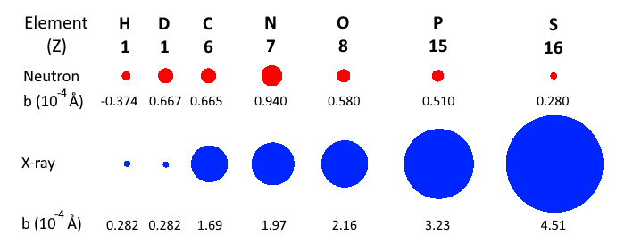

Home
Tutorial: Scattering Length Density
Contributors: Jeppe Breum Jacobsen, Jacob Kirkensgaard, Arwen Tyler.

Contrast variation technique: a photosynthetic membrane in different concentrations of D$_2$O. The signal from the lipids is masked out in 5-25% D$_2$O, and protein components in 40-45%. From Jakubauskas et al., 2021, Front. Chem. 9:631370.
Before you start
- It is a good idea to have SasView installed for this tutorial. You can download it from sasview.org.
- You will need to make calculations by hand. A spreadsheet and possibly pen and paper are recommended.
Learning Outcomes
After completing this tutorial you will- Understand the difference between scattering length densities for X-rays and neutrons.
- Be able to calculate scattering length densities for both X-rays and neutrons.
- Be able to calculate percentages of D$_2$O and H$_2$O to match out certain parts of a sample.
- Decide on SANS/SAXS and solvent based on your specific sample.
Introduction
Scattering length density (SLD) is a measure of a material's ability to scatter. SLD varies greatly depending on whether X-rays (SAXS) or neutrons (SANS) are used.
This is because X-rays scatter from the electrons of a material, while neutrons scatter from the nuclei. In general, the SLD of a material can be calculated as:
$$
\text{SLD} = \dfrac{\sum_{i=1}^n b_i}{V},
$$
where $b_i$ is the (coherent) scattering length of atom $i$, and $V$ is the molecular volume of the material in question. For X-rays, the scattering length of an atom is roughly proportional to the atomic number $Z$ of that atom.
However, for neutrons, the scattering lengths of atoms vary irregularly throughout the periodic table. This is illustrated in the figure below.

Comparison of coherent scattering cross sections (square of the coherents scattering lenghts) for neutrons (red) and X-rays (blue).
For neutrons, it is common to list the scattering length of an atom in units of fm (femtometers, $10^{-15}$ m). The X-ray scattering length of an atom is essentially given by $b=Zr_e$, where $r_e = 2.82$ fm is the classical electron radius.
Part I: Calculate SLD's
In this exercise we will calculate the scattering length densities for the two most commonly used solvents in SAS experiments, H$_2$O and D$_2$O for both X-rays and neutrons.-
Exercise: Calculate scattering length densities.
- Calculate the volume of H$_2$O and D$_2$O from the density and molecular weight. They can be found on wikipedia: water and heavy water
- Calculate the scattering lengths for X-rays using $b=Zr_e$.
- For neutrons, use this database from NIST to find the coherent scattering length (Click the relevant elements and use the column "Coh b"). Note that deuterium is 2H.
- Calculate the $\text{SLD}$ for both X-rays and neutrons using the formula above.
- Fill out the table below and give your answers in $10^{-6} \text{ Å}^{-2}$.
- Notice the difference between H$_2$O and D$_2$O in, respectively, an X-ray and a neutron scattering experiment!
- Show answers
| SLD | X-rays ($10^{-6} \text{ Å}^{-2}$) | Neutrons ($10^{-6} \text{ Å}^{-2}$) |
| H$_2$O | 9.45 |
-0.56 |
| D$_2$O | 9.41 |
6.38 |
Many SAS experiments are performed on samples consisting of particles dissolved in a solvent. If the SLD of the sample is similar to the solvent's SLD, the scattering from the sample will be weak. This difference or the excess scattering length density is defined as $$ \Delta \text{SLD} = \text{SLD}_{\text{sample}} - \text{SLD}_{\text{solvent}} $$ The intensity of scattering from the sample is proportional to $\Delta \text{SLD}^2$, which we call contrast.
Part II: Contrast matching
Sometimes, we want to match the SLD of the sample to the solvent, to make the sample or a part of the sample invisible. This technique is called contrast variation. In the exercise below, you will learn how to match out a protein.-
Exercise: Match out a protein in SANS
- Since there is only a difference in SLD between H$_2$O and D$_2$O for neutrons, this exercise only relates to SANS.
- Assume that the SLD of a protein is $1.3 \times 10^{-6} \text{ Å}^{-2}$.
- Calculate the fraction of H$_2$O and D$_2$O in your solvent in order to match out the protein ($\Delta \text{SLD}=0$). You can use the numbers you calculated in the previous exercise
- Display hint
Part III: Sodium dodecyl sulfate
This section focuses on the detergent sodium dodecyl sulfate (SDS), CH$_3$(CH)$_2$OSO$_3$Na, which is used to solubilize membrane proteins.
As a first exercise, calculate the SLD of SDS for both X-rays and neutrons with the online calculator from NIST.
For this you only need the molecular formula of SDS and the density which can be found on wikipedia.
For the X-ray source, assume an energy of 10 keV. You should see a table like the one below.

Under "Scattering length density" is the SLD for neutrons as "real". The SLD for X-rays is given as "X-ray SLD" under "real". Both marked in red.
Next, determine the percentage of H$_2$O and D$_2$O in your solvent in order to match out SDS in a SANS experiment. This is the contrast match point, and is given below the table in the NIST SLD calculater
In reality, the SLD of SDS varies between the hydrophilic head group and the hydrophibic tail group. In addition to this, SDS forms micelles in solution with
aggregation number $N\sim66$. In the exercise below, we calculate the forward scattering ($I(q=0)$) of SDS micelles, which is given by
\begin{equation}
I(q=0) = n N^2 \left( \Delta \mathrm{SLD}_\mathrm{tail} V_\mathrm{tail} + \Delta \mathrm{SLD}_\mathrm{head} V_\mathrm{head}\right)^2,
\end{equation}
where $n$ is the number density of the micelles.
-
Exercise: Calculate SLD and forward scattering of SDS
- In the image below the head/tail structure of the SDS molecule can be seen, as well as some SAXS data with a SDS concentration of 5 mg/mL.
- Calculate the SLD for the headgroup (SO$_4$Na, $V=60.5 \text{ Å}^3$), and tailgroup (C$_{12}$H$_{25}$, $V=355 \text{ Å}^3$) for X-rays.
- Calculate the number density $n$ of micelles. (Start by calculating the concentration in $\text{mol/cm}^3$).
- Finally, calculate the forward scattering
- How does it compare to the data?
In some applications, it can be useful to deuterate the detergents. This is done by replacing the hydrogen in the detergent with deuterium. Read more about this technique in the Tutorial on invisible detergents.
Part IV: Designing a neutron scattering experiment
In this part, we will design a SANS experiment to study the size and polydispersity of SiO$_2$ nanoparticles.
Additionally, a cationic surfactant (CetylTrimethylAmmonium Bromide - CTAB) is added to the solution in a concentration
close to the critical micelle concentration (CMC). The added CTAB is expected to form micelles around the nanoparticles with a thickness 2-3 nm.
The added CTAB prohibits aggregation of SiO$_2$ nanoparticles.
For our experiment we wish to gain information on both the SiO$_2$ nanoparticles and the CTAB coating. First we would like to find all
the relevant SLDs.
-
Task 1: Find SLDs
- Use your preferred tool to fill out the SLDs in the table below.
| Material | Chemical formula | Density (g/cm$^3$) | Neutron SLD ($10^{-6} \text{ Å}^{-2}$) | X-ray SLD ($10^{-6} \text{ Å}^{-2}$) |
| Silica | SiO$_2$ | 2.2 | ||
| CTAB | C$_{19}$H$_{42}$BrN | 1.0 | ||
| Water | H$_2$O | 1.0 | -0.561 | 9.44 |
| Heavy water | D$_2$O | 1.1 |
-
Task 2: Find contrasts
- Fill out the table below with $\Delta \text{SLD}^2$. Neutrons above diagonal, X-rays below diagonal.
- Which features will you expect to see with X-rays?
- If you use normal/heavy water as your solvent, which features can you expect to see with neutrons?
| Material | SiO$_2$ | CTAB | Water | Heavy water |
| SiO$_2$ | 0 | 16.3 | ||
| CTAB | 0 | |||
| Water | 0 | |||
| Heavy water | 0 |
-
Task 3: Decide on experiment
- Given everything we now know from task 1 and 2 which experiments should we perform? Display answer
- What should the percentages of H$_2$O and D$_2$O be in the neutron experiment to match out the silica?
Perspectives
If you want to learn how to fit a SasView model to data taken collected in different solvent contrasts, you can try the Tutorial on Simultaneous Fitting.
Challenges
- Challenge 1: You wish to investigate the structure of DMPC vesicles in SAXS. To do this, calculates its (x-ray) SLD. The volumes of head group (C$_{10}$H$_{18}$NO$_8$P) and tail group can be found in Table S1 of Mortensen et al., 2018.
- Challenge 2: In a next experiment, you wish to measure the time constant of lipid exchange in DMPC vesicles, using SANS. Therefore, you need to calculate neutron SLDs and its match point.
- Challenge 3: You wish to do further structural analysis with SANS, therefore: calculate the match point of, respectively, head and tail groups of DMPC. What structures would you expect to observe if you did those SANS experiments?
Perspectives
- SLD is a necessary first step needed before more complex modelling can be performed, such as those demonstrated in the Vesicle tutorial.
- Lipid exchange SANS experiments like those in challenge 2 have, e.g., been used to investigate lipid flipping rate and how these can be affected by peptides (Nakao et al., 2021).
Feedback
Help us improve the tutorials by- Reporting issues and bugs via our GitHub page. This could be typos, dead links etc., but also insufficient information or unclear instructions.
- Suggesting new tutorials/additions/improvements in the SAStutorials forum.
- Posting or answering questions in the SAStutorials forum.